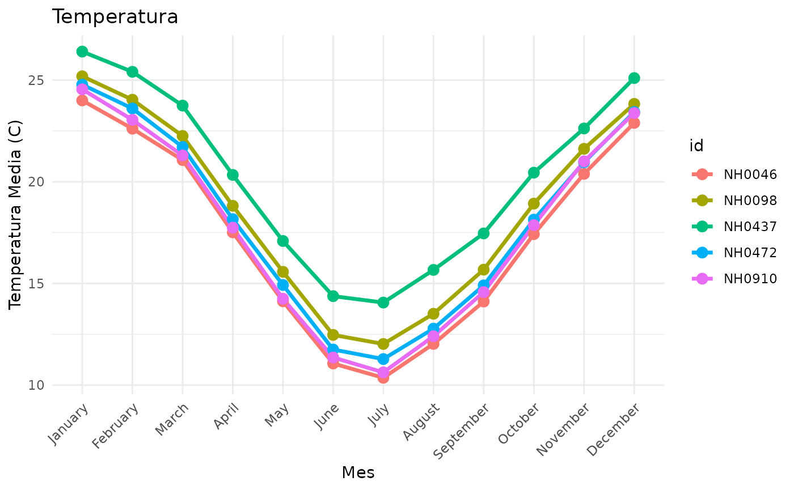

Estaciones-Meteorologicas
Source:vignettes/Estaciones-Meteorologicas.Rmd
Estaciones-Meteorologicas.RmdIntroducción al uso del paquete:
A continuación detallaremos el uso adecuado de las funciones del
paquete meteorodata.
1- Primero debedemos de importar la librería de nuestro paquete
2- Segundo debemos hacer una descarga del dataset que deseamos
analizar. Para esto solo basta con llamar a la funcion
descargar_datos()y asiganarle como parámetro el nombre del
dataset.
estacion_prueba <- descargar_datos("NH0098")
#> Descargando y leyendo el archivo de estacion 'NH0098' en el directorio
#> temporal.
head(estacion_prueba,5)
#> id fecha temperatura_abrigo_150cm temperatura_abrigo_150cm_maxima
#> 1 NH0098 1956-04-01 13.65 21.6
#> 2 NH0098 1956-04-02 16.75 23.6
#> 3 NH0098 1956-04-03 19.00 25.9
#> 4 NH0098 1956-04-04 17.55 23.6
#> 5 NH0098 1956-04-05 20.00 27.2
#> temperatura_abrigo_150cm_minima temperatura_intemperie_5cm_minima
#> 1 5.7 4.1
#> 2 9.9 8.4
#> 3 12.1 10.8
#> 4 11.5 10.5
#> 5 12.8 11.1
#> temperatura_intemperie_50cm_minima temperatura_suelo_5cm_media
#> 1 NA NA
#> 2 NA NA
#> 3 NA NA
#> 4 NA NA
#> 5 NA NA
#> temperatura_suelo_10cm_media temperatura_inte_5cm
#> 1 NA NA
#> 2 NA NA
#> 3 NA NA
#> 4 NA NA
#> 5 NA NA
#> temperatura_intemperie_150cm_minima humedad_suelo precipitacion_pluviometrica
#> 1 NA NA 0
#> 2 NA NA 0
#> 3 NA NA 0
#> 4 NA NA 0
#> 5 NA NA 0
#> granizo nieve heliofania_efectiva heliofania_relativa tesion_vapor_media
#> 1 0 0 NA NA 8.3
#> 2 0 0 NA NA 10.4
#> 3 0 0 NA NA 13.2
#> 4 0 0 NA NA 10.6
#> 5 0 0 NA NA 11.6
#> humedad_media humedad_media_8_14_20 rocio_medio duracion_follaje_mojado
#> 1 NA 62 4.3 NA
#> 2 NA 71 7.5 NA
#> 3 NA 78 11.1 NA
#> 4 NA 70 7.8 NA
#> 5 NA 66 9.2 NA
#> velocidad_viento_200cm_media direccion_viento_200cm
#> 1 3.2 NA
#> 2 10.4 NA
#> 3 7.2 NA
#> 4 7.2 NA
#> 5 5.6 NA
#> velocidad_viento_1000cm_media direccion_viento_1000cm velocidad_viento_maxima
#> 1 4 NA
#> 2 13 NA
#> 3 9 NA
#> 4 9 NA
#> 5 7 NA
#> presion_media radiacion_global radiacion_neta evaporacion_tanque
#> 1 NA NA NA NA
#> 2 NA NA NA NA
#> 3 NA NA NA NA
#> 4 NA NA NA NA
#> 5 NA NA NA NA
#> evapotranspiracion_potencial profundidad_napa horas_frio unidad_frio
#> 1 NA NA 1.962264 NA
#> 2 NA NA 0.000000 NA
#> 3 NA NA 0.000000 NA
#> 4 NA NA 0.000000 NA
#> 5 NA NA 0.000000 NA3- Una vez realizada la descarga de el/los dataset/s podemos hacer
uso de las funciones
grafico_temperatura_mensual() y tabla_resumen_temperatura().
grafico_temperatura_mensual: Mostrará un gráfico con el
promedio mensual de la temperatura de abrigo a 150 cm.
grafico_temperatura_mensual(NH_unidos)
tabla_resumen_temperatura: Calcula medidas
significativas segun el/los dataset/s elegido de las estaciones
meteorológicas.
tabla_resumen_temperatura(NH_unidos,c('NH0910','NH0437'))
#> # A tibble: 2 × 7
#> id observaciones_temperatura proporcion_NA temperatura_minima
#> <chr> <int> <dbl> <dbl>
#> 1 NH0437 18738 0.0101 -5.6
#> 2 NH0910 15506 0.00302 -8.5
#> # ℹ 3 more variables: temperatura_maxima <dbl>, temperatura_promedio <dbl>,
#> # desviacion_estandar <dbl>